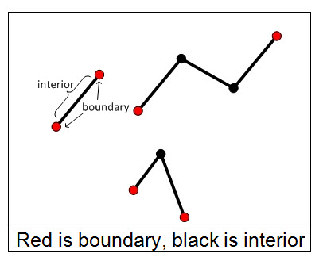
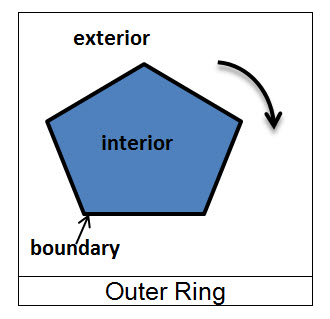
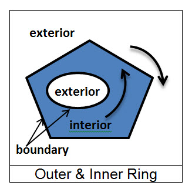

Performing Relational Operations
The predefined relational operations in the Geometry API are Contains, Crosses, Disjoint, Equals, Intersects, Overlaps, Touches, and Within. There is also a Relate operator which allows you to create custom relational operations.
To see how the relational operations work, first review the definitions of dimensionality, interiors, boundaries, and exteriors for the basic geometry types.
Dimensionality
- All point and multipoint shapes are zero dimensional.
- All polyline shapes are one dimensional.
- All polygon shapes are two dimensional.
Note that the presence of z-coordinates or m-coordinates does not affect the dimensionality of the geometry.
Interiors, boundaries, and exteriors
Each type of geometry has a defined interior, boundary, and exterior which are important in understanding relational operators.
- Point - A point represents a single location in space. The interior of a point is the point itself, the boundary is the empty set, and the exterior is all other points.
- MultiPoint - A multipoint is an ordered collection of points. The interior of a multipoint is the set of points in the collection, the boundary is the empty set, and the exterior is the set of points that are not in the collection.
- Point - A point represents a single location in space. The interior of a point is the point itself, the boundary is the empty set, and the exterior is all other points.
- Polyline - A polyline is an ordered collection of paths where each path is a collection of contiguous segments. A segment has a start and an end point.
The boundary of a polyline is the set of start and end points of each path, the interior is the set of points in the polyline that are not in the boundary, and the exterior is the set of points that are not in the boundary or the interior.
For the polyline shown below, the set of points comprising the boundary is shown in red. The interior of the polyline is shown in black.
 - Polygon - A polygon is defined by a collection of rings. Each ring is a collection of contiguous segments such that the start point and the end point are the same.
The boundary of a polygon is the collection of rings by which the polygon is defined. The boundary contains one or more outer rings and zero or more inner rings. An outer ring is oriented clockwise while an inner ring is oriented counter-clockwise. Imagine walking clockwise along an outer ring. The area to your immediate right is the interior of the polygon and to your left is the exterior. Similarly, if you were to walk counter-clockwise along an inner ring, the area to your immediate right is the interior of the polygon and to your left is the exterior.

Relational operators in the Geometry API
The predefined relational operators in Geometry are
- Contains - One geometry contains another if the other geometry is a subset of it and their interiors have at least one point in common. Contains is the inverse of Within.
- Crosses - Two polylines cross if they meet at points only, and at least one of the shared points is internal to both polylines. A polyline and polygon cross if a connected part of the polyline is partly inside and partly outside the polygon.
- Disjoint - Two geometries are disjoint if they don’t have any points in common.
- Equals - Two geometries are equal if they occupy the same space.
- Intersects - Two geometries intersect if they share at least one point in common.
- Overlaps - Two geometries overlap if they have the same dimension, and their intersection also has the same dimension but is different from both of them.
- Touches - Two geometries touch if the intersection of their interiors is empty, but the intersection of the two geometries is not empty.
- Within - One geometry is within another if it is a subset of the other geometry and their interiors have at least one point in common. Within is the inverse of Contains.
You can create custom relations with the Relate operator.